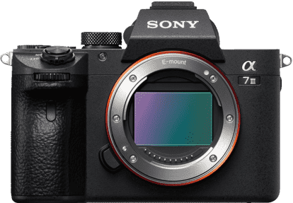

Technik
Die 2 beliebtesten Kameraarten derzeit sind einerseits die schon sehr viel länger vorhandene Spiegelreflexkamera oder die ab 2009 (siehe unter Geschichte) vorhandene Systemkamera auch Spiegellosekamera genannt. Wir schauen uns hier die Systemkamera (Spiegellose Kamera) bei der wie der Namen schon sagt es eigentlich nur ein grosser Unterschied gibt und zwar die Spiegelreflexkamera hat einen Spiegel, die Systemkamera nicht.
Die Systemkamera

Bei der Systemkamera gibt es 4 Arten von Sensoren, aber eigentlich müsst ihr nur 3 kennen, das wären einerseits Vollformat auch Kleinbild genannt, Aps-c und Micro Four Thirds. Der Vollformat Sensor ist in diesem Fall der Grösste.
Ein Grösserer Sensor bringt die Vorteile mit, dass es mehr Tiefenunschärfe gibt und das Bild ist schlussendlich hochauflösender.
Bei Kameras und Kamerazubehör gibt es wie bei anderen Produkten auch einen sehr grossen Markt. Deshalb muss man undedingt drauf achten, dass das dazugehörige Objektiv auf zum Bajonett der gewählten Kamera passt. Das Bajonett von den wohl beliebtesten Sony Kameras heisst zum Beispiel Sony E, bei Fujifilm XF, bei Canon EF und bei Nikon Nikon F.